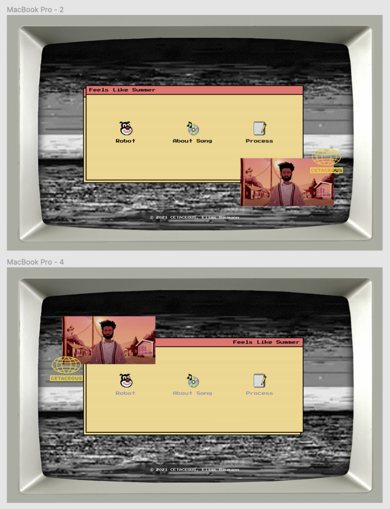
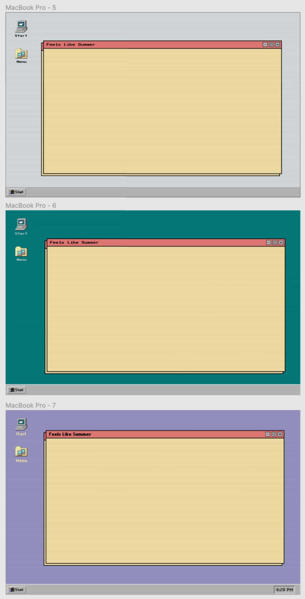
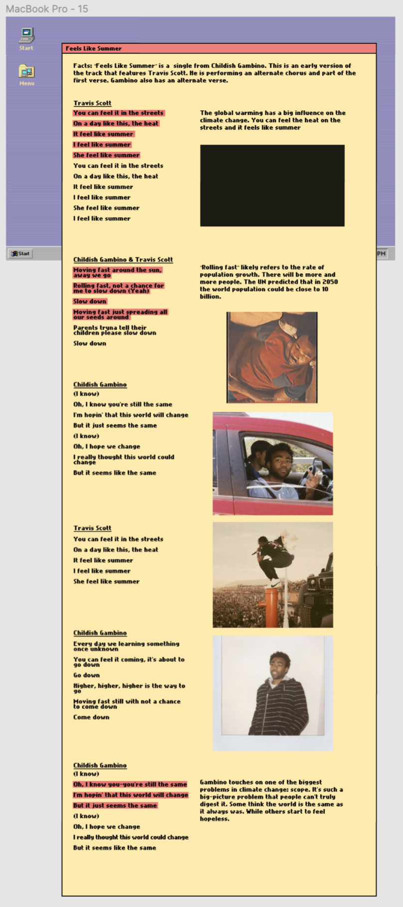
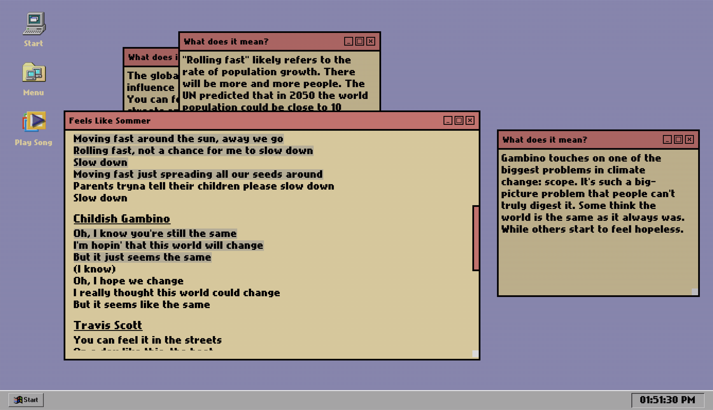

Process of my project


During my project, I've reached three important milestones. Those milestones kind of changed the vision of my website. Each time I've reached such a milestone, I was able to create new innovative stuff and to think more out of the box. Big shout out to Hanna and Nick for helping me reach my milestones.
Click for each milestone
Moodboard
I made three different Moodboards. But I only took one picture for each Moodboard. This one belongs to "Song". The picture shows a screenshot from the actual music clip. But it fits perfectly to the song itself.

This picture describes the location. The best location for listening this song is a city at the Sea. Hot weather and the sun is going down.
The third picture describes the mood of the song. When I listen to the song, I feel myself on a beach at the golden hour.
Mockup
Another important and big milestone was my mockup design. I worked on it all project long. The mockup was made with Figma, a tool for mockups like this. I always could try out my design ideas and check if it looks how I imagined.
Menu page
I had basically two different options for my menu page. They're different just in a little way.
Desktop design
Same for the Desktop Design. I was struggling with the colors of the font and background. At least I decided to take the purple one. Because it fitted to my color scheme the most.
Songlyrics page
For some reason, I was struggling with the layout of the lyrics part. I wanted to show and explain some important parts of the song. I had no clue how to do that. During the whole project, I created 3 different songpages, which looks all different. At least, I had an idea with multiple windows. But I haven't tried it in Figma yet.
Default Desktop
The most important part of the whole website was definitely the desktop page. It requires a good HTML, a creative CSS and a difficult JS. Even the "play audio" button and the time display were a challenge. I will probably never forget the moment when everything started working!
I am very proud about the result of the desktop page. My motto/goal at the beginning was like "I want to go further than my default skills" and I think I reached it.